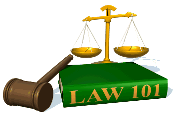

SK&KD
Standar Kompetensi :
6. Memahami pranata dan penyimpangan sosial
Kompetensi Dasar :
6.3 Mendeskripsikan pengendalian penyimpangan sosial
Apersepsi
MATERI
Setelah membaca semua materi,untuk lebih memahami lihatlah video dibawah ini.
Video KesimpulanPengertian Pengendalian Sosial
Pengertian Pengendalian Sosial
Pengendalian sosial merupakan tindakan ‘pengawasan’ terhadap kegiatan atau perilaku anggota-anggota masyarakat (kelompok) agar tidak menyimpang dari norma dan nilai sosial yang berlaku. Pengendalian sosial (social control) telah ada sejak manusia hidup berkelompok. Pengendalian sosial kerap berkaitan erat dengan norma dan nilai sosial. Bagi anggota masyarakat, norma sosial mengandung harapan dan dijadikan sebagai pedoman bertindak. Namun, masih saja terjadi penyimpangan dari norma-norma yang berlaku. Maka, agar masyarakat berlaku sesuai dengan pedoman itu, pengendalian merupakan mekanisme untuk mencegah terjadinya penyimpangan dan mengarahkan orang untuk bertindak menurut norma-norma yang telah melembaga.

Pengendalian sosial (social control) adalah cara dan proses pengawasan yang direncanakan atau tidak direncanakan yang bertujuan untuk mengajak, mendidik, atau bahkan memaksa warga masyarakat agar mematuhi norma dan nilai yang berlaku.
Tujuan Pengendalian Sosial
Tujuan Pengendalian Sosial
Tujuan dari pengendalian sosial agar anggota masyarakat menaati norma-norma dan nilai-nilai yang berlaku. Sistem pengendalian yang merupakan sistem maupun proses yang dijalankan masyarakat selalu disesuaikan dengan nilai-nilai dan kaidah-kaidah yang berlaku dalam masyarakat (Syarbaini dan Rusdiyanta, 2013: 92). Pengendalian sosial memiliki arti yang sangat penting bagi kehidupan masyarakat, karena pengendalian sosial bertujuan:
- Agar dapat terwujud keserasian dan ketenteraman dalam mayarakat.
- Agar pelaku penyimpangan dapat kembali mematuhi norma-norma yang berlaku.
- Agar masyarakat mau mematuhi norma-norma sosial yang berlaku baik dengan kesadaran sendiri maupun dengan paksaan.

Fungsi Pengendalian Sosial
Fungsi Pengendalian Sosial
Secara umum fungsi pengendalian sosial adalah untuk menegakan norma dan nilai-nilai yang ada di dalam masyarakat agar dapat dijadikan pedoman berperilaku dan untuk memperbaiki perilaku yang menyimpang.
Secara khusus fungsi pengendalian sosial adalah sebagai berikut.
1. Mempertebal keyakinan masyarakat
Mempertebal keyakinan masyarakat terhadap norma sosial
Dengan adanya aturan-aturan yang diberlakukan untuk warga masyarakat sebagai bentuk pengendalian sosial, diharapkan masyarakat memiliki kesadaran bahwa hidup bermasyarakat tidaklah dapat dilakukan secara seenaknya sendiri, melainkan harus disesuaikan dengan aturan atau norma sosial, dan bukan norma menurut dirinya sendiri.
Usaha untuk mempertebal keyakinan tentang norma sosial dapat ditempuh dengan cara:
a. Melalui pendidikan ,baik pendidikan di keluarga ,masyarakat dan sekolah.
b. Sugesti sosial, yaitu cara yang dilakukan dengan mempengaruhi pikiran sesorang melalui cerita-cerita, dongeng karya-karya orang besar,atau pejuang pahlawan yang mengandung nilai moral.
c. Menonjolkan kelebihan-kelebihan norma-norma tertentu dibandingkan norma-norma masyarakat.
d. Melalui pendidikan agama
2.Memberikan imbalan kepada warga yang menaati peraturan
Memberikan imbalan kepada warga yang menaati peraturan
Dengan adanya pengendalian sosial dalam bentuk aturan atau norma sosial, maka bagi yang melanggar akan memperoleh sanksi (imbalan negatif) dan bagi warga yang menaati akan mendapatkan pujian (imbalan positif). Masyarakat akan memberikan penilaian kepada warganya bukan berdasarkan kekayaan atau penampilan lahiriahnya saja, melainkan sejauh mana ia menaati aturan yang berlaku di masyarakat tersebut.

Penghargaan diberikan Kapolres kepada warga masyarakat yang membantu tugas dari polisi untuk menertibkan pengguna jalan
3.Mengembangkan Rasa Malu
Mengembangkan rasa malu
Hampir setiap masyarakat mempunyai “budaya malu”. Budaya malu berkaitan dengan harga diri. Seseorang yang melakukan kesalahan dengan melanggar norma sosial akan mengalami penurunan harga diri di mata warga masyarakat yang menjadi tempat tinggalnya. Sebagai contohnya wajah koruptor dan pelaku tindak kejahatan lainnya di televisi, dengan maksud mempermalukan pelaku kejahatan. Hal ini bertujuan agar masyarakat jangan melakukan hal yang sama jika tidak ingin dipermalukan di depan umum.

Budaya malu yang ada disekolahan
4.Mengembangkan Rasa Takut
Mengembangkan rasa takut
Pada umumnya setiap aturan disertai dengan sanksi, baik secara tertulis maupun tidak tertulis. Rasa takut mengakibatkan seseorang menghindarkan diri dari suatu perbuatan yang dinilai mengandung resiko. Orang yang berkelakuan baik karena sadar bahwa perbuatan menyimpang akan berakibat buruk bagi dirinya dan orang lain.
5.Menciptakan Sistem Hukum
Menciptakan sistem hukum
Pengendalian sosial merupakan bentuk aturan yang merupakan bagian dari sistem hukum. Pelaku penyimpangan sosial selain melanggar norma juga dikategorikan melanggar hukum. Ciri khas produk hukum adalah adanya aturan yang dilengkapi dengan sanksi tegas.
Jenis-Jenis Pengendalian Sosial
Jenis-Jenis Pengendalian Penyimpangan Sosial
Jenis Pengendalian Sosial
1.Pengendalian sosial menurut tujuannya
Jika diklasifikasikan menurut tujuannya, pengendalian sosial dapat dibedakan menjadi tiga, yakni tujuan kreatif, regulatif, dan eksploratif.
a. Tujuan kreatif atau konstruktif
Suatu bentuk pengendalian sosial dikategorikan bertujuan kreatif atau konstruktif apabila pengendalian sosial tersebut diarahkan pada perubahan sosial yang dianggap bermanfaat.
Contoh

Penerapan wajib belajar 12 tahun yang dicanangkan pemerintah merupakan salah satu contoh bentuk pengendalian sosial yang bertujuan kreatif atau konstruktif. Mengapa demikian, karena jika setiap penduduk menaati aturan tersebut, maka bukan saja pemerintah yang beruntung karena memiliki sumber daya manusia yang berpendidikan minimal setingkat SMA/SMK. Individu yang berhasil mengikuti aturan tersebut memiliki bekal pengetahuan untuk dapat memperoleh peluang bekerja yang lebih baik bila dibanding dengan orang yang tidak memiliki pendidikan sama sekali.
b. Tujuan regulatif
Pengendalian sosial dikategorikan bertujuan regulatif, apabila pengendalian sosial tersebut dilandaskan pada kebiasaan atau adat istiadat.
Contoh

Pemerintah kabupaten mencanangkan wajib jam belajar dari jam 18.00 sampai jam 21.00 bagi setiap penduduk. Hal tersebut bertujuan mengarahkan agar warga memiliki kebiasaan yang baik, yakni memanfaatkan waktu luang sebelum tidur untuk belajar.
c. Tujuan eksploratif
Pengendalian sosial dikategorikan bertujuan eksploratif, apabila pengendalian sosial tersebut dimotivasikan oleh kepentingan diri, baik secara langsung maupun tidak.
Contoh

Penerapan tata tertib di sekolah merupakan salah satu contoh pengendalian sosial yang bertujuan eksploratif, karena tata tertib disusun dengan tujuan meningkatkan motivasi siswa dalam mempersiapkan diri sebagai generasi muda yang berkualitas dilandasi pada penguasan iptek (ilmu pengetahuan dan teknologi) dan imtak (keimanan dan ketakwaan terhadap Tuhan Yang Maha Esa).
Jenis Pengendalian Sosial
2.Pengendalian sosial berdasarkan cara pengendaliannya
a. Cara persuasif/tanpa kekerasan
Merupakan pengendalian sosial melalui cara atau sikap pendekatan terhadap pihak-pihak yang akan dan sedang melakukan penyimpangan, agar meninggalkan perilaku yang menyimpang. Pengendalian sosial cara persuasif lebih menekankan pada usaha untuk mengajak atau membimbing berupa anjuran agar berperilaku sesuai norma yang ada.
Contoh

Sosialisasi yang dilakukan pemerintah daerah kepada ibu-ibu PKK untuk bisa mengelola sampah dengan baik.
b. Pengendalian Sosial Koersif
Pengendalian sosila yang dilakukan dengan cara memaksa. Cara ini dilakukan oleh penegak hukum terhadap individu atau kelompok yang melakukan penyimpangan. Tujuan pengendalian koersif adalah memberikan efek jera kepada pelaku dan memberi contoh serta peringatan kepada orang lain agar tidak melanggar norma hukum karena mendapatkan sangsi. Dalam pengendalian sosial secara koersif terdapat 2 macam cara yaitu:
1) Cara kompulsif (compultion)
Pengendalian sosial secara kompulsi dilakukan dengan menciptakan suatu situasi yang dapat mengubah sikap atau perilaku yang negatif. Misalnya jika ada siswa yang enggan memakai dasi, maka setiap menemui siswa yang tidak berdasi ditegur dan dijelaskan pentingnya berdasi.
2) Cara pervasi (pervation)
Pengendalian sosial secara pervasi dilakukan dengan menyampaikan norma/nilai secara berulang-ulang dan terus menerus dengan harapan norma/nilai tersebut melekat dalam jiwa seseorang, sehingga akan terbentuk sikap seperti apa yang diharapkan.
Contoh

Penangkapan pencuri sepeda motor oleh polisi, dilakukan agar pelaku merasa jera dengan perbuatannya dan menciptakan lingkungan yang nyaman di dalam masyarakat.
Jenis Pengendalian Sosial
3.Pengendalian sosial menurut jumlah yang terlihat/berdasarkan pola (bentuknya)
Apabila ditinjau dari aspek jumlah yang terlibat, teknik/cara pengendalian sosial dapat dilakukan dengan cara:
a. Pengawasan dari individu terhadap individu lainnya.
Contoh

Seorang ayah yang menasihati anaknya, seorang teman yang menegur temannya yang telah berbuat salah, dan lain-lain.
b. Pengawasan dari individu terhadap kelompok.
Contoh

Seorang pelatih sepak bola yang mengarahkan tim sepak bolanya, seorang guru yang menjelaskan materi pada murid-muridnya, dan lain-lain.

c. Pengawasan dari kelompok terhadap kelompok.
Terjadi apabila suatu kelompok mengawasi perilaku kelompok lainnya.
Contoh

Polisi sebagai satu kesatuan mengawasi masyarakat agar tercipta keamanan dan ketertiban, sekelompok mahasiswa KKN (kuliah kerja nyata) sedang memberikan penyuluhan pada masyarakat.
d. Pengawasan dari kelompok terhadap individu.
Contoh
Pemecatan karyawan oleh sebuah perusahaan karena melanggar peraturan.

Jenis Pengendalian Sosial
4.Pengendalian Sosial menurut Sifatnya
Menurut sifatnya, pengendalian sosial dibedakan dalam bentuk preventif, represif, dan gabungan preventif dan represif.
a. Pengendalian sosial preventif
Pengendalian sosial preventif yaitu usaha yang dilakukan sebelum terjadi pelanggaran, atau bertujuan mencegah terjadinya pelanggaran.
Contoh

Rambu-rambu lalu lintas dimaksudkan sebagai upaya pencegahan (preventif) agar tidak terjadi kekacauan dalam lalu lintas.
b.Pengendalian sosial represif
Pengendalian sosial represif yaitu usaha yang dilakukan setelah pelanggaran terjadi, ditujukan untuk memulihkan keadaan kepada situasi seperti sebelum terjadinya pelanggaran.
Contoh

Hukuman penjara bagi pelaku kejahatan merupakan salah satu bentuk pengendalian sosial represif. Dengan tertangkapnya pelaku kejahatan ini situasi lingkungan masyarakat menjadi aman dan membuat pelakunya jera.
c. Pengendalian Sosial Gabungan antara Preventif dan Represif
Pelaksanaan operasi tertib lalu lintas yang dilaksanakan oleh jajaran kepolisian merupakan salah satu bentuk pengendalian sosial bersifat preventif sekaligus represif. Mengapa demikian, dengan adanya operasi tertib yang dilancarkan oleh yang ber-wajib menjadikan masyarakat waspada, sebelum mengendarai kendaraan melengkapi surat-surat dan membekali diri dengan pengetahuan mengenai rambu-rambu lalu lintas, sehingga tidak akan terkena sanksi. Adapun bagi yang melakukan pelang-garan pada saat operasi tertib tersebut akan dikenai sanksi sesuai aturan yang berlaku, sehingga sifatnya represif.

Fungsi Pengendalian Sosial
5.Pengendalian Sosial Berdasarkan Pihak yang Melakukan Pengawasan
Berdasarkan pihak yang melakukan pengawasan , pengendalian sosial dibedakan menjadi 4, yaitu sebagai berikut.
a. Pengendalian resmi (formal), pengawasan yang didasarkan atas badan-badan resmi, misalnya negara, agama.

b. Pengendalian tidak resmi (non formal), dilaksanakan demi terpeliharanya peraturan-peraturan yang tidak resmi milik masyarakat. Pengawasan yang dilakukan oleh keluarga,RT, asrama dan perkumpulan arisan dll.

c. Pengendalian Institusional, yaitu pengaruh yang datang dari suatu pola kebudayaan yang dimiliki lembaga (institusi) tertentu. Misalnya :pondok pesantren

d. Pengendalian berpribadi, pengaruh baik atau buruk yang datang dari orang tertentu, tokoh berpengaruh atau orang yang sudah dikenal.
Cara Pengendalian Sosial
Cara Pengendalian Sosial
Dalam penerapannya, pengendalian sosial mempunyai beberapa bentuk, seperti gosip, teguran, hukuman atau sanksi, serta pendidikan dan agama. Berikut ini uraian singkat mengenai bentuk-bentuk pengendalian sosial tersebut.
1. Gosip
Gosip
Gosip adalah kabar yang tidak berlandaskan fakta. Gosip disebut juga kabar burung atau desas-desus. Suatu gosip tersebar di masyarakat jika pernyataan secara terbuka tidak dapat dilontar-kan secara langsung atau belum menemukan bukti-bukti yang sah.

Pada umumnya, gosip merupakan kritik tertutup yang ditujukan pada seseorang atau lembaga yang melakukan penyimpangan sosial. Dalam hal ini, orang atau lembaga yang terkena gosip akan berusaha memperbaiki tingkah lakunya, jika tidak, maka orang atau lembaga tersebut akan dicemooh, dikucilkan, dan merasa terisolir dalam kehidupan bermasyarakatnya.
2.Teguran
Teguran
Teguran adalah kritik sosial yang bersifat terbuka, baik lisan atau pun tertulis, terhadap orang atau lembaga yang melakukan tindak penyimpangan sosial. Teguran dilakukan secara langsung kepada pelaku tindak penyimpangan agar pelaku tindak penyimpangan tersebut menyadari perbuatannya dan dapat segera menghentikan tingkah laku menyimpangnya sesuai dengan peraturan yang berlaku.

3.Sanksi
Sanksi atau Hukuman
Sanksi atau hukuman merupakan tindakan tegas yang diambil jika teguran tidak lagi diindahkan oleh pelaku tindak penyimpangan. Sanksi atau hukuman me-rupakan bentuk pengendalian sosial yang efektif karena pelaku tindak penyimpangan akan mengalami kerugian atau penderitaan, misalnya didenda, diskors, atau mengalami hukuman fisik. Dalam hal ini, sanksi atau hukuman hanya dapat diberikan oleh pihak yang memiliki kekuatan hukum atau resmi berdasarkan peraturan yang berlaku. Dalam pelaksanaannya, sanksi atau hukuman berfungsi untuk:
a. memberikan efek jera kepada pelaku penyimpangan sosial
b. memberikan contoh kepada pihak lain agar tidak ikut melaku-kan perbuatan menyimpang (schock theraphy).
4.Pendidikan
Pendidikan
Pendidikan, baik formal ataupun nonformal, merupakan salah satu bentuk pengendalian sosial yang telah melembaga. Pendidikan dapat berfungsi untuk mengarahkan dan membentuk sikap mental anak didik sesuai dengan kaidah dan norma-norma yang berlaku di masyarakat. Pendidikan memberi pengertian akan hal yang baik dan hal yang buruk melalui pendekatan ilmiah dan logika. Agama merupakan penuntun umat manusia dalam menjalankan perannya di muka bumi ini.
5.Agama
Agama
Dalam ajaran agama, manusia dituntut untuk mampu menjalin hubungan baik dengan Tuhan, menjalin hubungan baik antarmanusia, dan menjalin hubungan baik dengan alam lingkungannya. Dalam ajaran agama dikenal adanya dosa dan pahala. Dosa akan diterima manusia jika mereka melakukan penyimpangan dari aturan-aturan yang telah ditetapkan dalam ajaran agama sesuai dengan petunjuk dari kitab suci atau nabi. Dosa yang dilakukan manusia akan memperoleh balasan atau hukuman dari Tuhan YME kelak di kehidupan lain (akherat). Adapun pahala akan diterima manusia jika mereka melakukan hal-hal baik sesuai dengan aturan-aturan yang telah ditetapkan dalam kitab suci atau ajaran nabi.

Peranan Lembaga Sosial dalam Pengendalian Sosial
Peranan Lembaga Sosial dalam Pengendalian Sosial
Dalam bab ini akan kita bicarakan lembaga sosial yang secara langsung berperan dalam proses pengendalian sosial. Dikatakan secara langsung karena keberadaan lembaga sosial tersebut memiliki fungsi mengatur kehidupan bermasyarakat.
Pengendalian sosial pada dasarnya adalah pengawasan. Pengawasan ini dilakukan secara individual maupun kelompok. Agar dapat dilakukan secara efektif, diperlukan lembaga khusus yang mengatur perilaku warga masyarakat. Dalam setiap pranata terdapat aparat atau pihak yang diberi wewenang untuk mengawasi atau mengendalikan orang-orang yang berperilaku menyimpang. Beberapa lembaga sosial yang ada dalam masyarakat kita adalah:
1.Kepolisian
Kepolisian
Polisi itu aparat resmi pemerintah. Tugasnya antara lain memelihara ketertiban masyarakat. Polisi berwenang untuk menangkap dan menahan setiap anggota masyarakat yang dituduh atau dicurigai melakukan kejahatan atau meresahkan masyarakat. Misalnya pencuri, perampok, pemerkosa, pembunuh, perusuh, dan sebagainya.

2.Pengadilan
Pengadilan
Ini juga aparat pemerintah. Unsur-unsur yang ternmasuk aparat pengadilan antara lain, hakim, jaksa, panitera, polisi, dan pengacara. Pihak pengadilan bertugas mengadili orang yang dituduh atau dicurigai melakukan kejahatan atau pelanggaran hukum. Jaksa bertugas menuntut plaku agar dijatuhi hukuman sesuai dengan peraturan yang berlaku. Hakim bertugas menetapkan dan menjatuhkan putusan berdasarkan data yang terungkap di pengadilan. Pengacara atau pembela bertugas mendampingi pelaku untuk memberikan pembelaan.

3.Tokoh Adat
Tokoh Adat
Adat berkaitan dengan kebiasaan yang bersifat magis religius tentang nilai-nilai budaya masyarakat tertentu. Tokoh adat berperan mengendalikan sikap dan perilaku warga masyarakat agar sesuai dengan norma-norma adat. Bentuk pengendalian bisa berupa penjatuhan sanksi yakni denda, teguran, atau pengucilan dari lingkungan adat.
4.Tokoh Agama
Tokoh Agama
Tokoh agama adalah seseorang yang memiliki pemahaman, penghayatan, dan pengamalan yang luas tentang agamanya. Misalnya ulama, uztad, pastor, pendeta, kyai, biksu dan sebagainya.
5.Tokoh Masyarakat
Tokoh Masyarakat
Setiap orang yang dianggap berpengaruh dalam kehidupan sosial suatu kelompok masyarakat sering disebut tokoh masyarakat. Termasuk di dalamnya adalah orang-orang yang terpandang atau terkemuka dalam masyarakat. Misalnya para pejabat atau penguasa, cendekiawan, tetua adat, dan sebagainya. Pada zaman dulu, guru adalah tokoh masyarakat. Namun seiring dengan perubahan zaman, saat ini guru tidak lagi dianggap sebagai tokoh masyarakat. Seseorang dipandang sebagai ”tokoh” , biasanya karena yang bersangkutan memiliki kelebihan tertentu dan dapat dijadikan panutan atau contoh di lingkungan masyarakatnya. Karena seorang tokoh dipandang mampu mempengaruhi orang lain, maka yang besangkutan dapat mengendalikan masyarakatnya, misalnya dengan menggalang kerja sama atau gotong royong di antara warga masyarakat.
BANTUAN
Menu "BANTUAN" berisi tentang petunjuk penggunaan media yang mencangkup penjelasan tentang fungsifungsi tombol yang ada pada media ini. berikut penjelasannya:

Menu SK& KD berisi tentang SK & KD pada media ini adalah mengenai Pengendalian Penyimpangan Sosial

Menu Materi berisi tentang materi pembelajaran pada mata pelajaran IPS materi Pengendalian Penyimpangan Sosial

Menu Evaluasi memuai latihan sosal dalam bentuk pilihan ganda

Menu Bantuan berisi petunjuk penggunaan media berupa penjelasan mengenai fungsifungsi tombol

Menu Tentang Penulis memuat informasi singkat mengenai media dan pengembang

Tombol untuk memutar video apersepsi

Tombol untuk memutar video kesimpulan

Tombol kembali adalah tombol yang digunakan untuk kembali ke halaman sebelumnya

Tombol Home adalah tombol yang digunakan untuk kembali kehalaman menu utama

Tombol Keluar adalah tombol untuk keluar dari aplikasi media pembelajaran
DAFTAR PUSTAKA
Fattah, Sanusi.dkk.2008.Ilmu Pengetahuan Sosial untuk SMP/ MTs kelas VIII.Jakarta: Pusat Perbukuan, Departemen Pendidikan Nasional.
Soekanto, Soerjono. 2010.Sosiologi Suatu Pengantar.Jakarta: PT Raja Grafindo Persada
Sudarmi,Sri dan Waluyo. 2008.Galeri Pengetahuan Sosial Terpadu untuk SMP /MTs Kelas VIII.Jakarta: Pusat Perbukuan, Departemen Pendidikan Nasional.
Sugiharsono ,dkk.2008.Contektual Teaching and Learning Ilmu Pengetahuan Sosial SMP /MTs Kelas VIII Edisi 4.Jakarta: Pusat Perbukuan, Departemen Pendidikan Nasional.
Syarbani, Syahrial dan Rusdiyanta. 2013.Dasar-Dasar Sosiologi. Yogyakarta: Graha Ilmu.
TENTANG PENULIS
Pembimbing
Nama : Sudrajat, M.Pd
NIP : 19730524 200604 1
Email : sudrajat@uny.ac.id
Narasumber
Nama : Dr. Taat Wulandari, M.Pd
NIP : 197602112005012001
Email : taat_wulandari@uny.ac.id